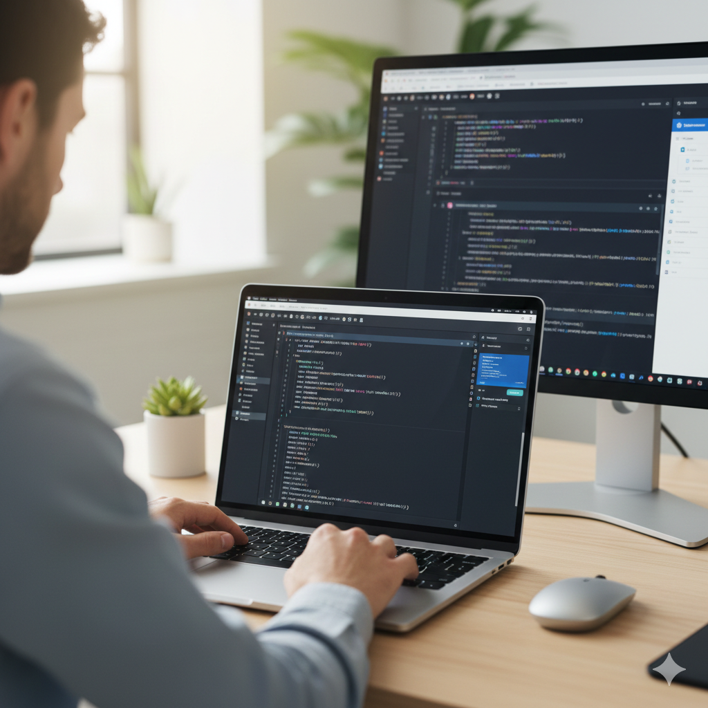
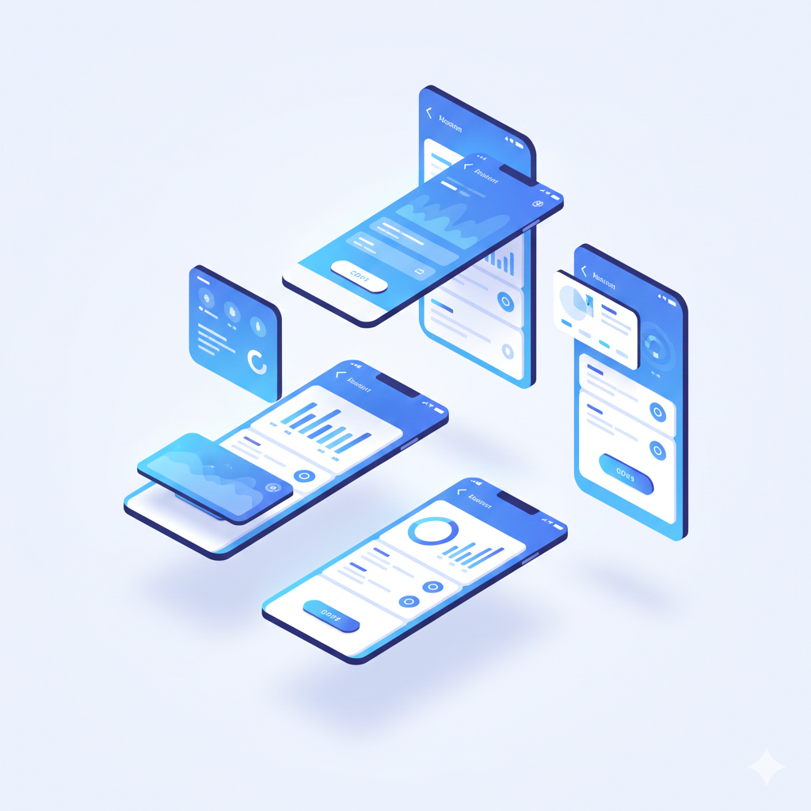
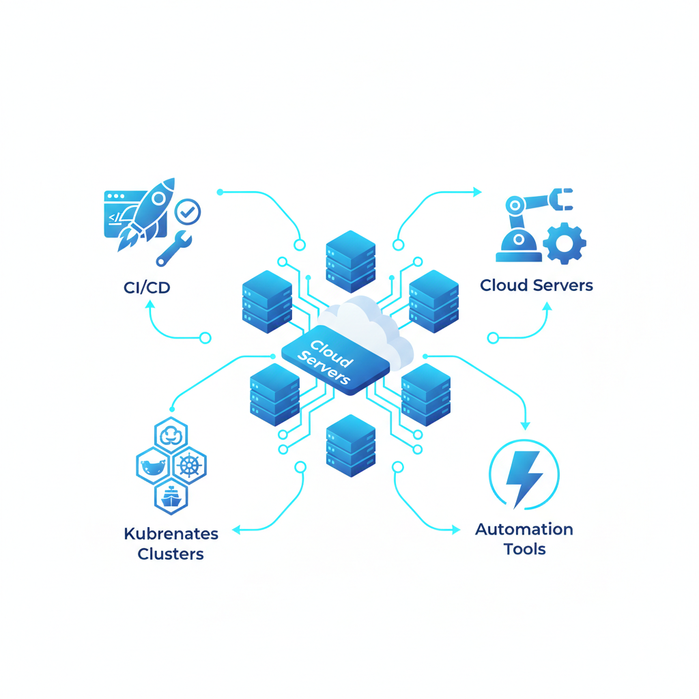

Our Services

Web Development
Modern web apps, dashboards, and enterprise portals using reliable backend and scalable frontend tech.

Mobile App Development
Native and cross-platform mobile apps for Android & iOS with clean UI/UX and high performance.

Cloud & DevOps
CI/CD automation, Kubernetes, cloud migration, infrastructure as code, and containerized deployments.

Enterprise Integrations
API-first enterprise system integrations & interoperability for ERP, CRM, POS and legacy systems.
IT Support & Maintenance
24×7 application maintenance, security updates, patching and SLA-driven production support.